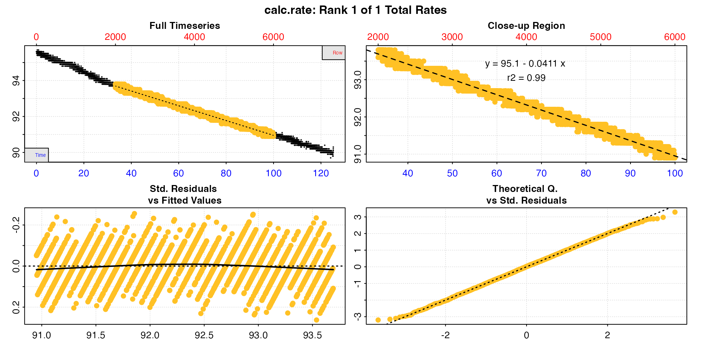

Introduction
calc_rate() is the general function in
respR for manually determining rates across user-defined
ranges of time, row or oxygen value. This contrasts with
auto_rate() which uses a degree of automation to determine
rates in the "linear" method, or allows rolling rates of a
fixed width to be calculated across an entire dataset and then ordered
in various ways.
Defaults
By default, if no other inputs are entered calc_rate
will calculate a rate across an entire dataset as entered. The data used
here is the sardine.rd dataset, but the time data has been
converted to minutes to demonstrate the different x-axis values.
cr <- calc_rate(sard)
Time range
The default method by which a rate region can be specified is
by = "time". The function finds the closest matching values
if these exact values do not occur in the time data. If either of the
values lie outside the actual time data range it will use the first or
last value instead.
cr <- calc_rate(sard,
from = 20,
to = 80,
by = "time")Row range
Similarly the rate region can be specified
by = "row".
cr <- calc_rate(sard,
from = 2000,
to = 6000,
by = "row")
Oxygen range
Lastly, the rate region can be specified by = "oxygen".
This option finds the first occurrence of the from value
(or the closest matching value), and the last occurrence of the
to value.
cr <- calc_rate(sard,
from = 94,
to = 92,
by = "oxygen")Multiple rates
calc_rate can be used to extract multiple rates by
entering vectors of paired values as from and
to in any of these metrics.
cr <- calc_rate(sard,
from = c(10, 20, 30, 40, 50, 60, 70),
to = c(20, 30, 40, 50, 60, 70, 80),
by = "time")
summary(cr)
#>
#> # summary.calc_rate # -------------------
#> Summary of all rate results:
#>
#> rep rank intercept_b0 slope_b1 rsq row endrow time endtime oxy endoxy rate.2pt rate
#> 1: NA 1 95.7 -0.0593 0.799 601 1201 10 20 95.1 94.4 -0.07 -0.0593
#> 2: NA 2 95.8 -0.0643 0.838 1201 1801 20 30 94.4 93.8 -0.06 -0.0643
#> 3: NA 3 95.2 -0.0456 0.727 1801 2401 30 40 93.8 93.4 -0.04 -0.0456
#> 4: NA 4 94.9 -0.0375 0.649 2401 3001 40 50 93.4 93.1 -0.03 -0.0375
#> 5: NA 5 95.0 -0.0399 0.691 3001 3601 50 60 93.1 92.6 -0.05 -0.0399
#> 6: NA 6 95.3 -0.0450 0.744 3601 4201 60 70 92.6 92.2 -0.04 -0.0450
#> 7: NA 7 95.3 -0.0445 0.745 4201 4801 70 80 92.2 91.8 -0.04 -0.0445
#> -----------------------------------------S3 generic methods
Saved calc_rate objects work with the generic S3 methods
print, summary, plot, and
mean
print
This simply prints the result to the console. If there are multiple
rates it will print the first one. The pos input can be
used to print others.
print(cr)
#>
#> # print.calc_rate # ---------------------
#> Rank 1 of 7 rates:
#> Rate: -0.0593
#>
#> To see other results use 'pos' input.
#> To see full results use summary().
#> -----------------------------------------
print(cr, pos = 2)
#>
#> # print.calc_rate # ---------------------
#> Rank 2 of 7 rates:
#> Rate: -0.0643
#>
#> To see other results use 'pos' input.
#> To see full results use summary().
#> -----------------------------------------
summary
This prints the summary table to the console which contains linear
model coefficients and other metadata for each rate. If there are
multiple rates the pos input can be used to select which to
print. The export input can be used to export the
pos selected rows as a dataframe, or the entire table if
this is left NULL.
summary(cr)
#>
#> # summary.calc_rate # -------------------
#> Summary of all rate results:
#>
#> rep rank intercept_b0 slope_b1 rsq row endrow time endtime oxy endoxy rate.2pt rate
#> 1: NA 1 95.7 -0.0593 0.799 601 1201 10 20 95.1 94.4 -0.07 -0.0593
#> 2: NA 2 95.8 -0.0643 0.838 1201 1801 20 30 94.4 93.8 -0.06 -0.0643
#> 3: NA 3 95.2 -0.0456 0.727 1801 2401 30 40 93.8 93.4 -0.04 -0.0456
#> 4: NA 4 94.9 -0.0375 0.649 2401 3001 40 50 93.4 93.1 -0.03 -0.0375
#> 5: NA 5 95.0 -0.0399 0.691 3001 3601 50 60 93.1 92.6 -0.05 -0.0399
#> 6: NA 6 95.3 -0.0450 0.744 3601 4201 60 70 92.6 92.2 -0.04 -0.0450
#> 7: NA 7 95.3 -0.0445 0.745 4201 4801 70 80 92.2 91.8 -0.04 -0.0445
#> -----------------------------------------
summary(cr, pos = 1:4)
#>
#> # summary.calc_rate # -------------------
#> Summary of rate results from entered 'pos' rank(s):
#>
#> rep rank intercept_b0 slope_b1 rsq row endrow time endtime oxy endoxy rate.2pt rate
#> 1: NA 1 95.7 -0.0593 0.799 601 1201 10 20 95.1 94.4 -0.07 -0.0593
#> 2: NA 2 95.8 -0.0643 0.838 1201 1801 20 30 94.4 93.8 -0.06 -0.0643
#> 3: NA 3 95.2 -0.0456 0.727 1801 2401 30 40 93.8 93.4 -0.04 -0.0456
#> 4: NA 4 94.9 -0.0375 0.649 2401 3001 40 50 93.4 93.1 -0.03 -0.0375
#> -----------------------------------------
cr_exp <- summary(cr, pos = 1:4, export = TRUE)
cr_exp
#> rep rank intercept_b0 slope_b1 rsq row endrow time endtime oxy endoxy rate.2pt rate
#> <lgcl> <int> <num> <num> <num> <int> <int> <num> <num> <num> <num> <num> <num>
#> 1: NA 1 95.7 -0.0593 0.799 601 1201 10 20 95.1 94.4 -0.07 -0.0593
#> 2: NA 2 95.8 -0.0643 0.838 1201 1801 20 30 94.4 93.8 -0.06 -0.0643
#> 3: NA 3 95.2 -0.0456 0.727 1801 2401 30 40 93.8 93.4 -0.04 -0.0456
#> 4: NA 4 94.9 -0.0375 0.649 2401 3001 40 50 93.4 93.1 -0.03 -0.0375
mean
This averages all the values in the $rate column, or
those selected using pos. The result can be saved as a
value by using export = TRUE.
cr_mean <- mean(cr, pos = 1:4, export = TRUE)
#>
#> # mean.calc_rate # ----------------------
#> Mean of rate results from entered 'pos' ranks:
#>
#> Mean of 4 output rates:
#> [1] -0.0517
#> -----------------------------------------
cr_mean
#> [1] -0.0517
plot
calc_rate objects can be plotted. pos can
be used to select which result to plot, and panel to plot
individual panels. legend can be used to suppress labels
and legend, and quietto suppress console output. Additional
plotting parameters can also be passed to adjust margins, axis label
rotation, etc.
Here we plot result 2, panel 2, hide the equation legend, rotate the axis labels, give the left axis more space, and increase the space from axis labels to axis ticks.
Two-point rate
The output also includes a $rate.2pt. This is the rate
determined by simple two-point calculation of difference in oxygen
divided by difference in time. See vignette("twopoint") for
an explanation of this output and when it might be useful.